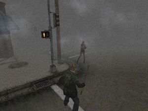

Silent Hill 2 is a 2001 survival horror video game developed by Team Silent, a group in Konami Computer Entertainment Tokyo, and published by Konami for the PlayStation 2.
Development of Silent Hill 2 began in June 1999, soon after Silent Hill had been completed. Its narrative was inspired by the Russian novel Crime and Punishment (1866) by Fyodor Dostoevsky, and some of the influences on the game's artistic style include the work of film director David Lynch and paintings by Francis Bacon and Andrew Wyeth; cultural references to history, films and literature can be found in the game. In contrast with the previous title, whose narrative concerned cult activity, Silent Hill 2 focuses directly on the psychology of its characters.

James preparing to fight a monster
The objective of Silent Hill 2 is to guide the player character, James Sunderland), through the monster-filled town of Silent Hill as he searches for his deceased wife. The game features a third-person view, with various camera angles.
Throughout the game, James collects maps, which can only be read if there is sufficient light or when his flashlight is on. He also updates relevant maps to reflect locked doors, clues, and obstructions, and writes down the content of all documents for future reference. Maps are not essential to proceed through the game, but they will give a significant advantage to exploring the world.
Some of the more apparent themes of the narrative are grief, guilt, and punishment. Other noticeable themes in Silent Hill 2 are mental illness, lust, love and abuse, including an exploration of how it affects people.
A prominent focus of analysis is the symbolism of the monsters present in the game, which seem to be manifested from James' guilty consciousness. One major example is Pyramid Head, a tall, masculine, faceless humanoid figure, whose head is concealed by a large pyramid-shaped helmet that is made of rusted iron. Pyramid Head wields a large blade called the "Great Knife", which he drags across the floor in several encounters with the player. His design not only serves to psychologically frighten the player, as the sharp edges of the triangular head were intentionally illustrated to "suggest the possibility of pain" according to his creator Masahiro Ito, but it is also emblematic of many of the themes of the narrative, as his appearance and behaviour represent the guilt that James experienced, the retribution he seeks for his actions, and the sexual frustration that he felt while his late wife, Mary, was terminally ill.
Silent Hill 2 sold over one million copies in the month of its release in North America, Japan and Europe, with the most units sold in North America.
| Publication | Score |
|---|---|
| AllGame | 3.5/5 |
| Eurogamer | 9/10 |
| Game Informer | 8.25/10 |
| Next Generation | 4/5 |
| IGN | 9/10 (PS2), 8.4/10 (PC) |
Silent Hill 2 is often considered to be one of the best horror games and one of the best video games of all time. It ranked first on X-Play's list of the scariest games of all time in 2006. In 2009, IGN listed it as one of the five best horror video games created after 2000, and one of the twelve greatest PlayStation 2 games of all time. It ranked again in IGN's list of the top 100 PS2 games, and again in 2018, on IGN's list of the 100 greatest video games ever made.